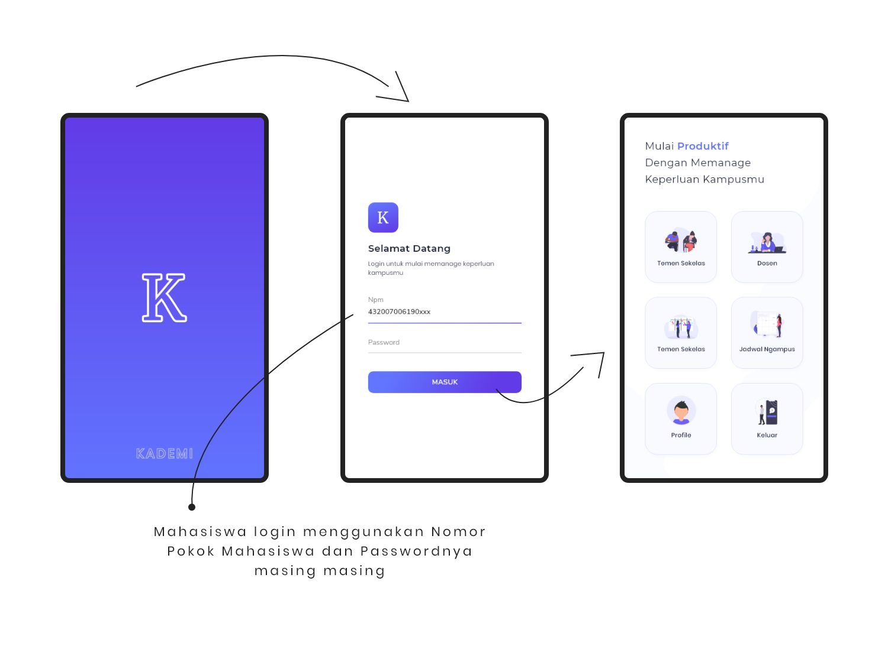
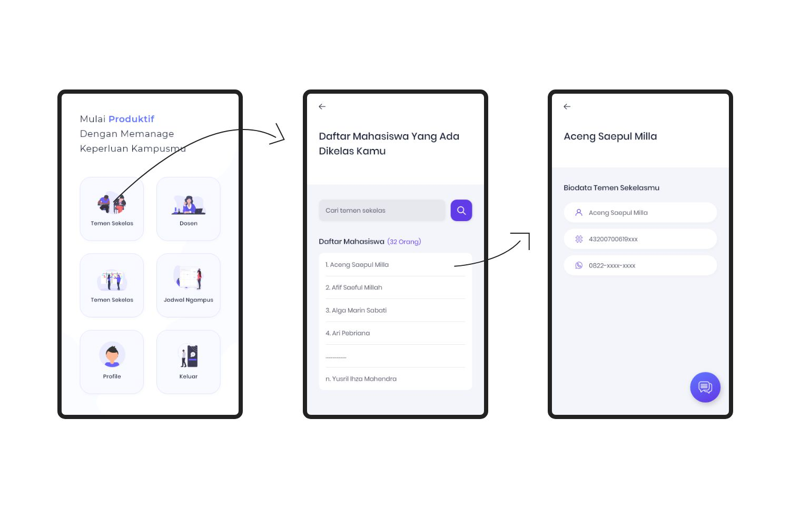
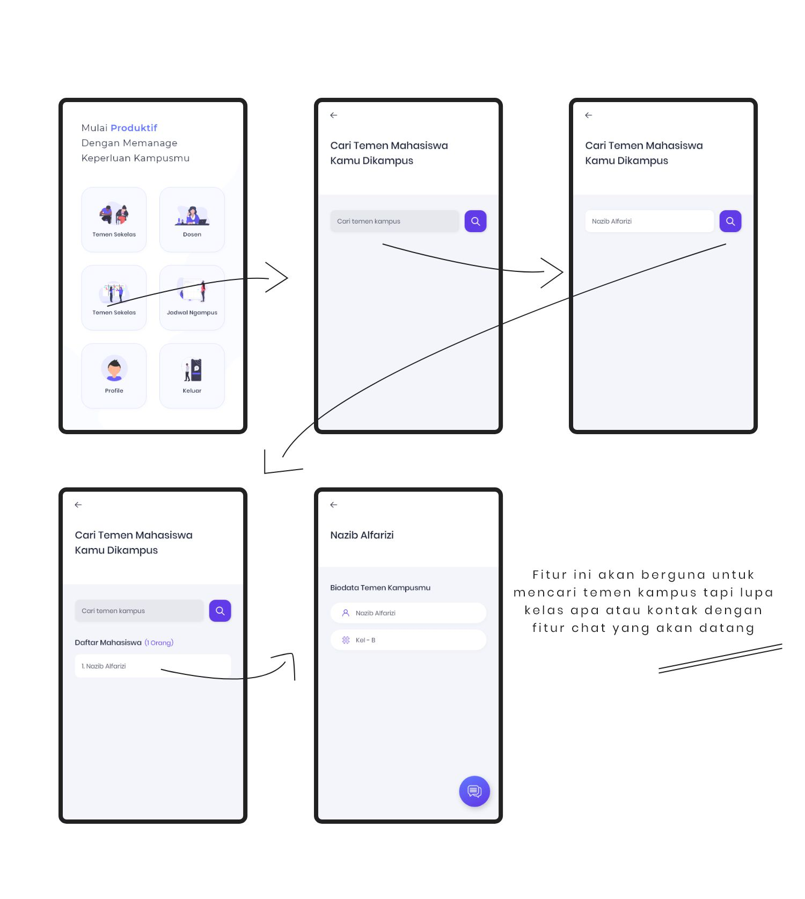
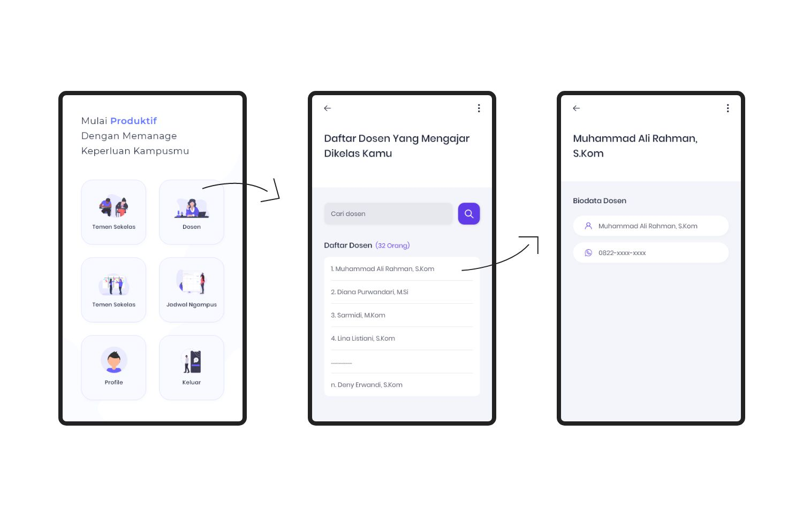
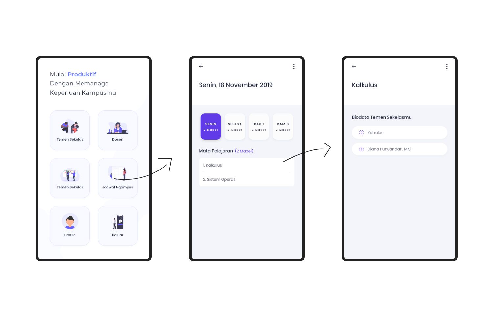

In this version 0.1 of the Kademi app, we provide several features that are very important to have in campus or high school academic applications.
The features provided in this version are:
Each of the above features is, of course, quite important for students, as it allows them to view classmate data, and more importantly, lecturer data and class schedules.
In the lecturer data feature, students who do not yet have contact information for their lecturers will find it very easy to get this information without needing to ask their friends, which could disturb them if they are busy.
This application was developed by two people in one team:
In Image 1, the user or student opens the Kademi application, where the student logs in using their NPM (student identification number) and password. Currently, as the accounts are still dummy, you can use random numbers. The NPM and Password must be the same (in this beta version).
For example:
After successfully logging in, the student will be redirected to the main page.
In Image 2, there is a feature to view classmate data, where student A can see their classmates' data. This feature is useful in cases such as group assignments, where you need to know a classmate's NPM or full name.
The next feature is for finding campus mates, which will be quite useful for students looking to connect with new friends on campus, especially if they only know their name and want to contact them for specific needs.
Similar to the classmate feature, this feature is for lecturer data. This will be very important for students who need to contact their lecturer but do not yet have their contact information.
Equally important, the campus schedule feature will help students check their schedules. This feature is more useful than keeping your schedule at home or as just an image.
This concludes the brief documentation of the Kademi v.0.1 application. We extend our deepest thanks.
We hope this application can help any student in the future. We also hope that the committee or judges can provide us with feedback through our social media.
We will continue to develop this application further after this event concludes.